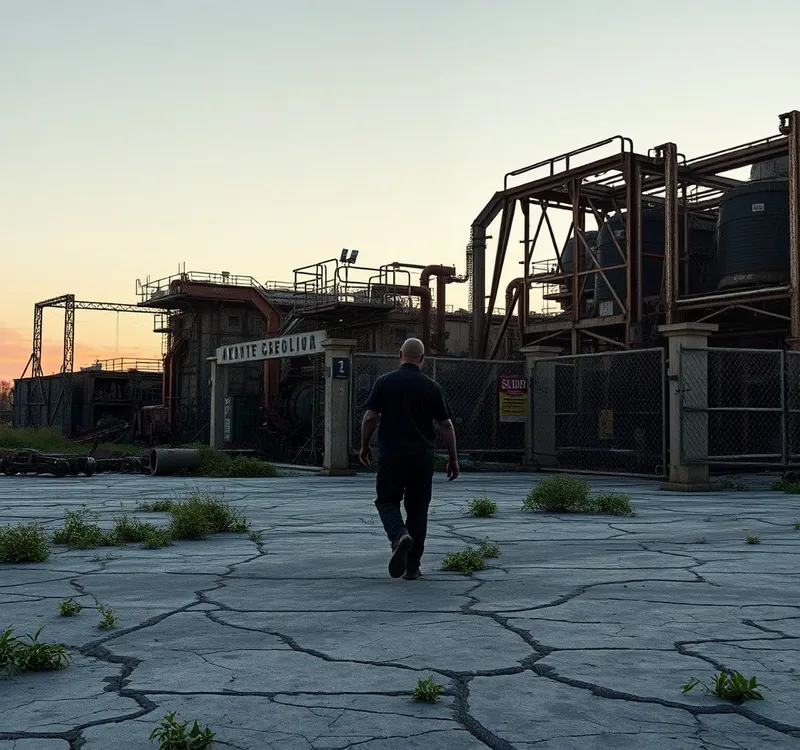

OKpolítico
OKpolíticoNoticias actuales
Esta sección está disponible para tu marca →Presupuesto 2027: 6 mil millones menos al INE y baja inversión
El presupuesto de egresos 2027 reduce 6 mil millones de pesos al INE y mantiene una inversión física del 2.6 % del PIB, según Coparmex. La Cámara lo aprobó sin cambios de fondo, mi
13 de noviembre de 2026Cámara de Diputados aprueba recorte de 6 mil millones de pesos al INE
La Cámara de Diputados aprobó el Presupuesto de Egresos 2027 con un recorte de 6 mil millones de pesos al INE. Mientras el oficialismo defiende la medida como austeridad, los datos
13 de noviembre de 2026Desempleo por estado: Ciudad de México 4.2%, sector informal: Oaxaca 43.2%
Mapa del empleo en México con datos del INEGI, 2.º trimestre 2026.
14 de noviembre de 2026Agustín de Hipona: el teólogo que influyó en la cultura de Occidente
Análisis sobre la vida y obra de Agustín de Hipona, teólogo y filósofo cristiano. Se detalla su trayectoria desde el maniqueísmo hasta su obispado en Hipona y su impacto en la cult
13 de noviembre de 2026Jonathan Heath se opone al recorte de tasa de 25 puntos de Banxico
El subgobernador Jonathan Heath cuestionó el recorte de 25 pb de la tasa de Banxico a 6.25 %, señalando que la inflación subió a 3.75 % y que el diferencial con la Fed quedó en 225
13 de noviembre de 2026Mañanera 13 nov: Narco paga música, turismo récord y auditorios abandonados
En la mañanera del 13 de noviembre, Sheinbaum entregó 40.2 mdp de la subasta de 57 motos decomisadas a Ryan Wedding para el Conservatorio de Tultepec (3,500 estudiantes, licenciatu
13 de noviembre de 2026Sheinbaum y OpenAI discuten IA en el sector salud
Claudia Sheinbaum recibió a Greg Brockman, cofundador de OpenAI, en Palacio Nacional y conversó sobre el uso de inteligencia artificial en salud. La mandataria recordó el proyecto
12 de noviembre de 2026Cebolla alcanza 69 pesos el kilo en la Ciudad de México
La cebolla sube 82.2 % y el jitomate 43.9 % en un año, superando la inflación general. La Presidenta Sheinbaum señala una inflación del 4.6 % y anuncia medidas, pero datos del INEG
12 de noviembre de 2026Inversión WEG, APEC 2028 y App Bienestar
Resumen de la mañanera del 12 noviembre: WEG invierte 250 mdd en Hidalgo para data centers; Sheinbaum a APEC China (sede 2028); App Banco Bienestar para 43 millones; PIB 3.2% Q3 pe
12 de noviembre de 2026Hijo de Taddei renuncia en Sonora por bloqueo UIF
Luis Rogelio Piñeda Taddei, hijo de la expresidenta del INE Guadalupe Taddei, renunció como secretario particular del gobernador de Sonora Alfonso Durazo tras el congelamiento de s
12 de noviembre de 2026SOMOS denuncia a Sheinbaum, 2 secretarias y 12 gobernadores ante el INE
El partido SOMOS denunció ante el INE a la presidenta Claudia Sheinbaum, secretarias de Estado y 12 gobernadores por presunta injerencia electoral rumbo a 2027. La queja de 63 pági
11 de noviembre de 2026
Inseguridad obliga a cancelar 115 100 mdp en inversiones durante 2025
La Encuesta Nacional de Victimización de Empresas 2026 revela que la inseguridad costó 115 100 millones de pesos en inversiones, representando 0.46 % del PIB. Extorsión lideró los
11 de noviembre de 20264 temas de la mañanera del miércoles 11 de noviembre
Resumen de la mañanera del miércoles 11 de noviembre de 2026. La presidenta Claudia Sheinbaum encabezó la conferencia, en la que un funcionario del IMSS Bienestar presentó 12 accio
11 de noviembre de 2026Detienen a colaborador de Carlos Manzo; homicidios bajan a la mitad, según el Gabinete
El Gabinete de Seguridad presentó el reporte de incidencia delictiva de octubre de 2026 y avances del Plan Michoacán en la mañanera del 10 de noviembre de 2026. Reportó que los hom
11 de noviembre de 2026Opinión | Poder Judicial elimina evaluaciones tras paros
El Poder Judicial de la Federación abrogó el acuerdo AG-POAJ-025/2026 que regulaba la evaluación de desempeño. Tras paros en 17 estados, se eliminaron sanciones vinculadas al rendi
10 de noviembre de 2026Lo más importante de las mañaneras del 3, 5 y 6 de noviembre
Resumen neutral de los anuncios de las mañaneras del 3, 5 y 6 de noviembre de 2026: plan del ISSSTE, cirugías del IMSS, inversión en Hidalgo y becas, con el abasto de medicamentos
10 de noviembre de 2026Sheinbaum anuncia récord de empleos y 24 mil millones para La Escuela es Nuestra
La presidenta Claudia Sheinbaum anunció un récord de empleos formales y una inversión de casi 24 mil millones de pesos para el programa La Escuela es Nuestra. También presentó dato
10 de noviembre de 2026